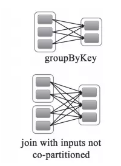
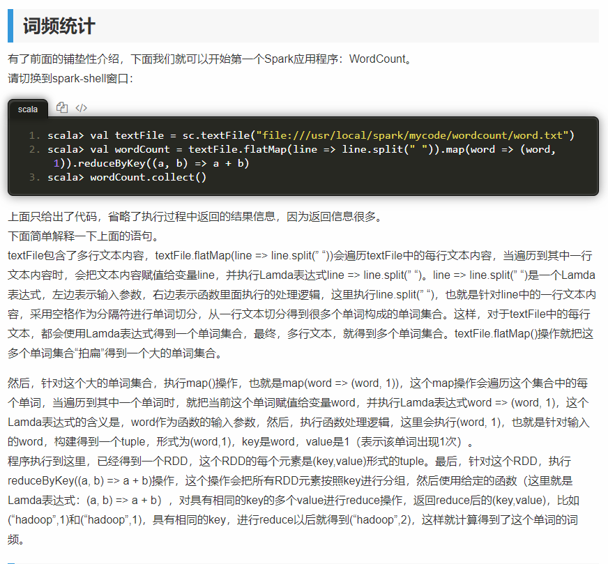

spark
spark-submit 资源分配
硬件资源： 6 节点，每个节点16 cores, 64 GB 内存
每个节点在计算资源时候，给操作系统和Hadoop的进程预留1core，1GB，所以每个节点剩下15个core和63GB内存。
core的个数，决定一个executor能够并发任务的个数。所以通常认为，一个executor越多的并发任务能够得到更好的性能， 但有研究显示一个应用并发任务超过5，导致更差的性能。所以core的个数暂设置为5个。 5个core是表明executor并发任务的能力，并不是说一个系统有多少个core，即使我们一个CPU有32个core，也设置5个core不变。
executor个数，接下来，一个executor分配 5 core,一个node有15 core，从而我们计算一个node上会有3 executor（15 / 5）， 然后通过每个node的executor个数得到整个任务可以分配的executors个数。 我们有6个节点，每个节点3个executor，6 × 3 = 18个executors，额外预留1个executor给AM，最终要配置17个executors。
最后spark-submit启动脚本中配置 –num-executors = 17
memory，配置每个executor的内存，一个node，3 executor， 63G内存可用，所以每个executor可配置内存为63 / 3 = 21G 从Spark的内存模型角度，Executor占用的内存分为两部分：ExecutorMemory和MemoryOverhead，预留出MemoryOverhead的内存量之后， 才是ExecutorMemory的内存。 MemoryOverhead的计算公式： max(384M, 0.07 × spark.executor.memory)
因此 MemoryOverhead值为0.07 × 21G = 1.47G > 384M
最终executor的内存配置值为 21G – 1.47 ≈ 19 GB
至此， Cores = 5, Executors= 17, Executor Memory = 19 GB
宽依赖、窄依赖
宽依赖：父RDD的每个分区都有可能被多个子RDD分区使用，子RDD分区通常对应父RDD所有分区

窄依赖：父RDD的每个分区只被一个子RDD分区使用，子RDD分区通常只对应常数个父RDD分区

对比：
- 宽依赖往往对应着shuffle操作，需要在运行的过程中将同一个RDD分区传入到不同的RDD分区中， 中间可能涉及到多个节点之间数据的传输，而窄依赖的每个父RDD分区通常只会传入到另一个子RDD分区，通常在一个节点内完成。
- 当RDD分区丢失时，对于窄依赖来说，由于父RDD的一个分区只对应一个子RDD分区， 这样只需要重新计算与子RDD分区对应的父RDD分区就行。这个计算对数据的利用是100%的
- 当RDD分区丢失时，对于宽依赖来说，重算的父RDD分区只有一部分数据是对应丢失的子RDD分区的，另一部分就造成了多余的计算。 宽依赖中的子RDD分区通常来自多个父RDD分区，极端情况下，所有父RDD都有可能重新计算。
对应函数
窄依赖的函数有：
map, filter, union, join(父RDD是hash-partitioned ), mapPartitions, mapValues
宽依赖的函数有：
groupByKey, join(父RDD不是hash-partitioned ), partitionBy
RDD、DataFrame、Dataset
- spark基本算子，一个只读的分区记录集合。包含两种操作：transformation 和 action，其中transformation属于惰性操作。
RDD、DataFrame、Dataset的差异：
相同点：
- RDD、DataFrame、Dataset全都是spark平台下的分布式弹性数据集，为处理超大型数据提供便利
- 三者都有惰性机制
- 三者都会根据spark的内存情况自动缓存运算，这样即使数据量很大，也不用担心会内存溢出
- 三者都有partition的概念和共同的函数，如filter，排序等
- DataFrame和Dataset均可使用模式匹配获取各个字段的值和类型
不同点：
- RDD
- RDD一般和spark mlib同时使用
- RDD不支持sparksql操作
- DataFrame
- 与RDD和Dataset不同，DataFrame每一行的类型固定为Row，只有通过解析才能获取各个字段的值，如
testDF.foreach{ line => val col1=line.getAs[String]("col1") val col2=line.getAs[String]("col2") } - DataFrame与Dataset一般与spark ml同时使用
- DataFrame与Dataset均支持sparksql的操作，比如select，groupby之类，还能注册临时表/视窗，进行sql语句操作
dataDF.createOrReplaceTempView("tmp") spark.sql("select ROW,DATE from tmp where DATE is not null order by DATE").show(100,false) - DataFrame与Dataset支持一些特别方便的保存方式，比如保存成csv，可以带上表头，这样每一列的字段名一目了然
//保存 val saveoptions = Map("header" -> "true", "delimiter" -> "\t", "path" -> "hdfs://172.xx.xx.xx:9000/test") datawDF.write.format("com.databricks.spark.csv").mode(SaveMode.Overwrite).options(saveoptions).save() //读取 val options = Map("header" -> "true", "delimiter" -> "\t", "path" -> "hdfs://172.xx.xx.xx:9000/test") val datarDF= spark.read.options(options).format("com.databricks.spark.csv").load()
- 与RDD和Dataset不同，DataFrame每一行的类型固定为Row，只有通过解析才能获取各个字段的值，如
- Dataset
- DataFrame也可以叫Dataset[Row],每一行的类型是Row
- RDD
- 相互转化
- DataFrame/Dataset转RDD
val rdd1=testDF.rdd val rdd2=testDS.rdd - RDD转DataFrame
import spark.implicits._ val testDF = rdd.map {line=> (line._1,line._2) }.toDF("col1","col2") - RDD转Dataset
import spark.implicits._ case class Coltest(col1:String,col2:Int)extends Serializable //定义字段名和类型 val testDS = rdd.map {line=> Coltest(line._1,line._2) }.toDS - Dataset转DataFrame
import spark.implicits._ val testDF = testDS.toDF - DataFrame转Dataset
import spark.implicits._ case class Coltest(col1:String,col2:Int)extends Serializable //定义字段名和类型 val testDS = testDF.as[Coltest]
- DataFrame/Dataset转RDD
wordcount
